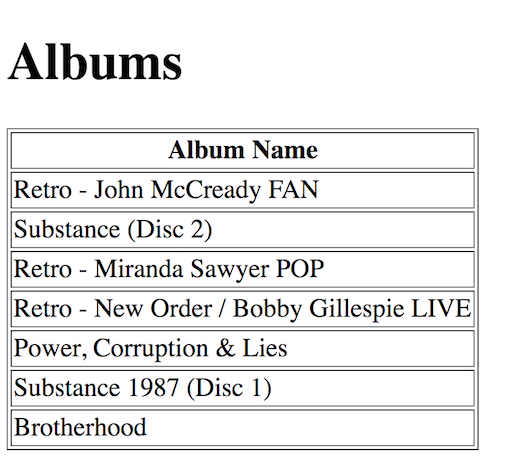

Use the music database for these exercises.
Open the HTML file artists.html
Thoroughly examine the code in the HTML, JavaScript and PHP files. Make sure you understand the code.
Update the code so the artist_id of each artist is shown as the first column in the HTML table shown.
Run the PHP program albums.php. Notice how it is passed an argument called artist_id and a value - this returns the album names for artist id 1. In the address bar of your browser change the value of artist_id to 2 or 3 or 4 to see albums for other artists.
Provide the missing code in the albums.js function showData() to display the output shown below:

Modify line 15 in albums.js so we get an Ajax request that gets album data for artist id 2 like this:
xmlhttp.open("GET", "albums.php?artist_id=2", true); Examine the program albums.php carefully. Particularly, lines 4 & 8.
Hopefully, you can see how a PHP program can be passed a specific value and in turn it will return data specific to that value. i.e. we request data for a particular artist id and we get data for that artist id. This is done alot in Ajax programming.
Uncomment the HTML button code from albums.html to reveal a button. Refresh to see it.
Let's use the button to trigger the Ajax request. Update the code in albums.js for the window onload event. The code should look like this now:
window.onload=function(){
document.getElementById('button').onclick=function(){
getAjaxData();
}
}
Clicking the button now should trigger the Ajax request. Again, using events to trigger Ajax requests is done alot in Ajax programming.
Use the gaa2013 database for these exercises. We are going to eventually filter gaa games by category.
Run the PHP program games.php. Notice how it returns all the game data (for now). This is the data Ajax requests.
Run games.html. It shows data for all games. Examine the code in games.html, games.js and games.php. You MUST understand this fundamental code. If you don't ask for help.
Update the code in games.js to show the score (goals and points) for each team.
We're going to update the code to filter games by category. Follow these steps carefully.
In games.php comment out the code labeled (1) and uncomment the code labeled (2). Lines 3-4 should now look like this:
// (2)
$category = $_GET['category'];
and lines 11-17 should look like this:
// (1)
// $result = mysqli_query($connection,"select * from games");
//OR
// (2)
$result = mysqli_query($connection,"select * from games where category = $category");
games.php can now filter the games by category. Try it by running it using this URL:http://localhost/ajaxReview/games.php?category=1
We'll update the JavaScript code to use this filtering.
In games.js comment out the code labeled (1) and uncomment the code labeled (2). Lines 18-22 should now look like this:
// (1)
// xmlhttp.open("GET", "games.php", true);
// (2)
xmlhttp.open("GET", "games.php?category=1", true);
Above, we're requesting games in category 1 (Ulster).
Run games.html again. It should display the Ulster (1) category games. Take time to examine and understand this code.
Next, in games.js comment out the code labeled (2) and uncomment the code labeled (3). Run games.html again - you should see data from another category (Leinster).
A variable is introduced to store the category value and is passed in the Ajax request.
Finally, uncomment the dropdown box code in games.html. We'll use this dropdown to control the game data we want to filter. You will need to add and uncomment code at the label (4) to implement this.
If you need help just ask